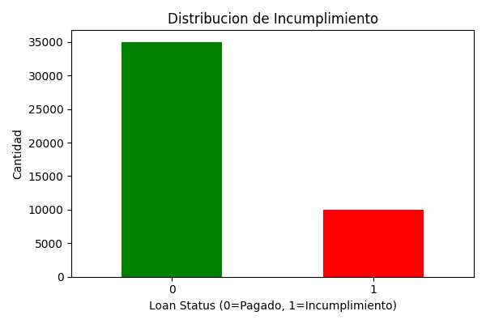
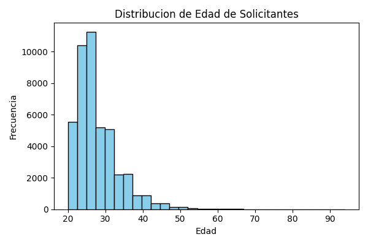
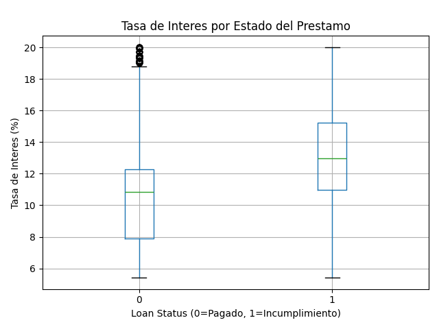
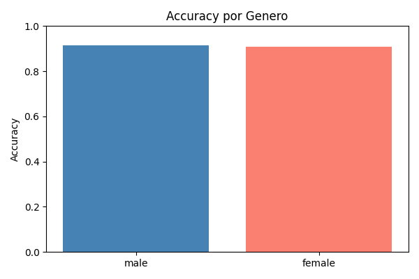
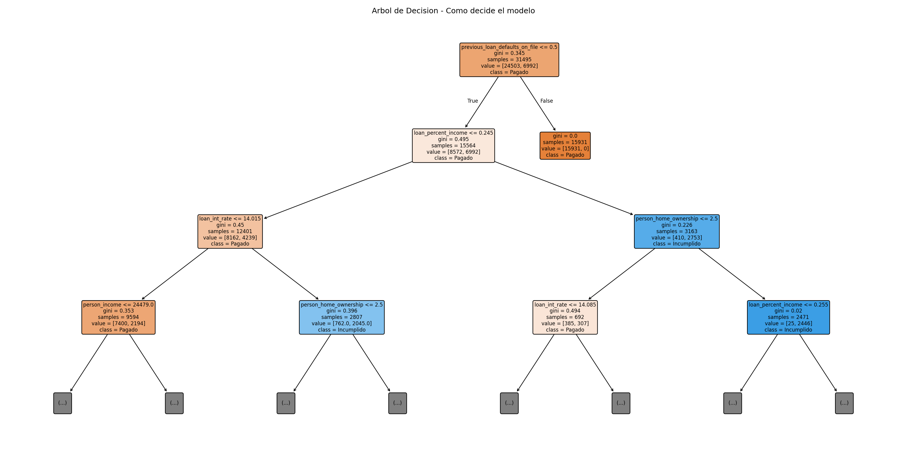

Una entidad financiera quiere predecir si un solicitante de credito va a incumplir el pago (no pagar el prestamo). Para eso, se tomo un dataset real de 45,000 solicitudes de prestamos con informacion como edad, ingresos, historial crediticio, monto del prestamo, etc.
El proyecto implementa un pipeline DataOps: un flujo automatizado que toma los datos crudos, los limpia, los valida, los almacena, los analiza visualmente y entrena modelos de inteligencia artificial para hacer la prediccion. Todo el proceso esta registrado con logs y metricas de monitoreo.
Un pipeline es una secuencia de pasos automatizados que transforman datos crudos en informacion util. Cada etapa depende de la anterior: si la ingesta falla, no se puede limpiar; si la limpieza falla, no se puede validar. Esto garantiza que los datos que llegan al modelo de IA sean de calidad.
Que es la ingesta? Es el primer paso: leer los datos desde su fuente original y cargarlos en memoria para poder trabajar con ellos. En este caso, el archivo fuente es un CSV (Comma-Separated Values), un formato de texto plano donde cada fila es un registro y las columnas estan separadas por comas.
Se utilizo la libreria pandas de Python con la funcion pd.read_csv('datos/loan_data.csv'). Esta funcion:
Resultado: se cargaron 45,000 filas con 14 columnas en 0.05 segundos.
Que es la limpieza? Los datos del mundo real vienen con problemas: valores faltantes, datos imposibles, texto que las maquinas no entienden. La limpieza es el proceso de detectar y corregir estos problemas para que los datos sean confiables antes de analizarlos.
Paso 1 — Buscar valores nulos (vacios):
Se reviso cada columna buscando celdas vacias. Resultado: 0 valores nulos. El dataset estaba completo en este aspecto.
Paso 2 — Eliminar outliers (valores atipicos):
Se aplicaron reglas de negocio para detectar datos que no tienen sentido logico:
person_age < 18 → Un menor de 18 no puede solicitar un creditoperson_age > 100 → Edades irreales, posible error de cargaperson_income < 0 → Un ingreso negativo no tiene sentidoperson_emp_exp < 0 → Experiencia laboral negativa es imposibleResultado: 7 filas eliminadas (todas por edades fuera de rango). El dataset quedo con 44,993 filas.
Paso 3 — Codificacion de variables categoricas:
Los modelos de machine learning solo entienden numeros. Las columnas con texto se convirtieron a numeros con LabelEncoder:
person_gender: female → 0, male → 1person_education: Associate → 0, Bachelor → 1, Doctorate → 2, High School → 3, Master → 4person_home_ownership: MORTGAGE → 0, OTHER → 1, OWN → 2, RENT → 3loan_intent: DEBTCONSOLIDATION → 0, EDUCATION → 1, HOMEIMPROVEMENT → 2, MEDICAL → 3, PERSONAL → 4, VENTURE → 5previous_loan_defaults_on_file: No → 0, Yes → 1loan_int_rate estaba en puntos basicos (ej: 1602 = 16.02%), pero al revisar los datos reales los valores ya venian en porcentaje (rango: 5.42% - 20.0%, promedio: 11.01%). Por lo tanto, no se necesito conversion.
Que es la validacion? Despues de limpiar los datos, hay que verificar que todo quedo bien antes de usarlos. Es como un control de calidad en una fabrica: se revisa que el producto final cumple con las especificaciones. Se realizan dos tipos de validacion:
Validacion Estructural (la "forma" de los datos):
Validacion Semantica (el "significado" de los datos):
Resultado: 0 errores de validacion. Los datos estan listos para ser usados.
Que es la carga? Una vez que los datos estan limpios y validados, se almacenan en formatos permanentes para que puedan ser consultados despues sin tener que repetir todo el proceso. Los datos se guardaron en dos formatos:
1. Archivo CSV limpio (../03_EDA_Resultados/datos_limpios.csv):
Una copia del dataset ya procesado en formato texto. Util para compartir o importar en otras herramientas como Excel o Google Sheets.
2. Base de datos SQLite (../03_EDA_Resultados/prestamos.db):
Una base de datos relacional ligera. Se creo la tabla prestamos con las 44,993 filas. Permite hacer consultas SQL sobre los datos, por ejemplo:
Se verifico que las 44,993 filas se cargaron correctamente en la base de datos.
Que es el EDA? Antes de entrenar un modelo de IA, hay que entender los datos visualmente. El EDA (Exploratory Data Analysis) genera graficos y estadisticas que permiten descubrir patrones, detectar anomalias y entender la distribucion de las variables. Es como "conocer" los datos antes de pedirle a la maquina que aprenda de ellos.





Que es un modelo de clasificacion? Es un algoritmo de inteligencia artificial que aprende de datos historicos para predecir a que categoria pertenece un nuevo dato. En este caso, predice si un prestamo sera pagado (0) o incumplido (1). Se entrenaron 2 modelos diferentes y se compararon para elegir el mejor.
Por que analizar equidad? Es fundamental que un modelo de IA no discrimine por genero, raza u otras caracteristicas sensibles. Se comparo la precision del modelo entre hombres y mujeres para verificar que funciona igual para todos. Si la diferencia es menor al 5%, se considera equitativo.
Estas son las 14 variables del dataset. Cada fila representa una solicitud de prestamo. La variable objetivo (loan_status) es lo que el modelo intenta predecir.
| Variable | Descripcion | Tipo | Ejemplo / Rango |
|---|---|---|---|
person_age | Edad del solicitante en anos | Numerico | 20 - 94 |
person_gender | Genero del solicitante | Categorico | male, female |
person_education | Nivel educativo alcanzado | Categorico | High School, Bachelor, Master, Associate, Doctorate |
person_income | Ingreso anual en dolares | Numerico | $8,000 en adelante |
person_emp_exp | Anos de experiencia laboral | Numerico | 0+ |
person_home_ownership | Situacion de vivienda | Categorico | RENT, OWN, MORTGAGE, OTHER |
loan_amnt | Monto del prestamo solicitado | Numerico | Dolares |
loan_intent | Proposito del prestamo | Categorico | PERSONAL, EDUCATION, MEDICAL, VENTURE, HOMEIMPROVEMENT, DEBTCONSOLIDATION |
loan_int_rate | Tasa de interes del prestamo | Numerico | 5.42% - 20.0% |
loan_percent_income | Ratio prestamo / ingreso anual | Numerico | 0.0 - 1.0 |
cb_person_cred_hist_length | Anos de historial crediticio | Numerico | 2+ |
credit_score | Puntaje crediticio (tipo FICO) | Numerico | 390 - 784 |
previous_loan_defaults_on_file | Tiene incumplimientos previos registrados? | Categorico | Yes, No |
loan_status | Variable objetivo: 1 = incumplio, 0 = pago | Binario | 0, 1 |
Sigue estos pasos para ejecutar el pipeline completo en tu computadora y obtener los mismos resultados.
Requisitos previos:
Paso 1 — Clonar el repositorio:
Paso 2 — Crear un entorno virtual (recomendado):
Paso 3 — Instalar dependencias:
Paso 4 — Ejecutar el pipeline completo:
Paso 5 — Ejecutar los tests automatizados:
Paso 6 — Ver resultados:
Abre 04_Pagina_Web/dashboard.html en un navegador para ver este dashboard, o revisa la carpeta 03_EDA_Resultados/:
| Archivo | Que contiene |
|---|---|
log_ejecucion.log | Log completo paso a paso del pipeline |
datos_limpios.csv | Dataset procesado y listo para usar |
prestamos.db | Base de datos SQLite con los datos |
reporte.txt | Resumen con KPIs y metricas de los modelos |
*.png | 5 graficas del analisis exploratorio y equidad |